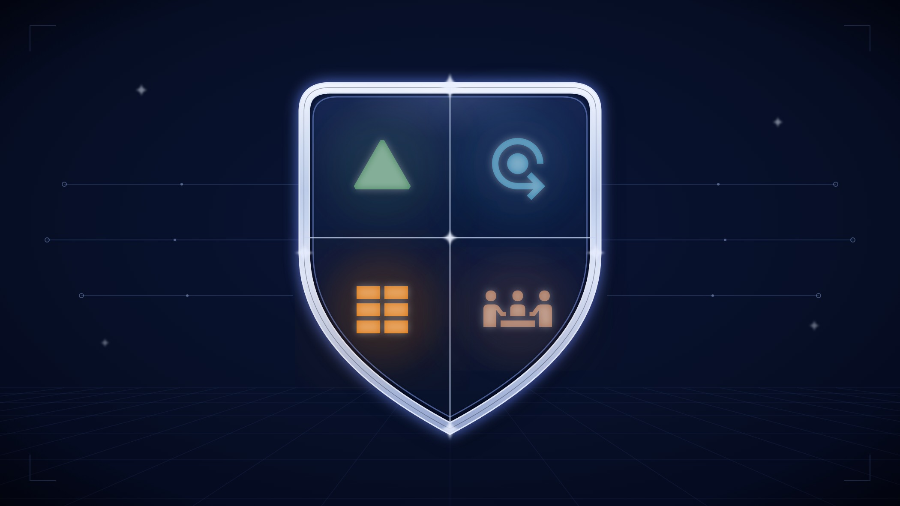

An AI Operating Layer for Streamlining Project Delivery
Project management can be brutal. When multiple projects overlap, delivery depends on keeping hundreds of small facts, dependencies, decisions, and handoffs synchronized. Wolfpack AI Command uses supervised AI operators to maintain that operational record so developers can stay focused on the product, and project managers can focus on delivery. Command and complete AI-accelerated projects faster, tighter, with more control than you thought possible.
- 8 skillsThe rules travel into every AI session
- 54 rulesNumbered in one published rulebook across ten sections
- 1 AI identityEvery system action has a distinct author
- 0 destructive toolsThe agent layer cannot delete or overwrite anything

The role matters. The way we assembled it is the problem.
Ask anyone who has run a serious project what made the difference and they usually name a person. Not a framework. Not a board. The person who knew something was blocked before the status meeting, told the client the uncomfortable thing while it was still fixable, and kept the whole project in their head while everyone else held one slice.
The job is punishing in a very specific way. A project manager owns dates they cannot personally move, built from work they are not personally doing. The interruptions are the work, so there is no magical morning where the strategic thinking happens before Slack lights up.
That is not a criticism of project managers. It is a criticism of the job design. We braided two incompatible kinds of work into one role, handed both to one person with one calendar, and then acted surprised when the best people burned out doing clerical maintenance around the edges of high-stakes judgment.
One role. Two completely different jobs.
Pull a project manager's week apart and the split gets obvious fast.
-
The record
Most of the week
- Chasing statuses nobody updated
- Keeping tickets aligned with reality
- Linking work back to the plan it belongs to
- Recording decisions so they do not evaporate
- Version bookkeeping and release notes
- Remembering why the team ruled something out three months ago
-
The judgment
The human being part
- Managing relationships inside and outside the team
- Seeing the schedule slip before it becomes a fire
- Communicating clearly up, down, and between teams
- Understanding enough technically to hear what is really being said
- Deciding what gets cut — and defending the decision
- Knowing when the plan has stopped being true
The record-keeping consumes most of the hours. It is not why you hire a great project manager, and it is not why anyone becomes one.
Every good project manager I have worked with eventually makes some version of this complaint, usually while reconciling a board against reality late on a Friday. They are right.
Extremely boring. The documentation requirement of excellent project management makes for a pile of exceptionally boring, tedious, “paperwork” work. To grind through a TPS Report after completing the project is terrible.
There is one catch: you cannot just stop doing it. The record is what judgment runs on. “Scheduling clairvoyance” is not magic; it is pattern recognition fed by an honest, current account of what happened. Let the record rot and you do not free the project manager — you blind them. Someone calling an audible when a new blocker surfaces can save days. My question became: how can I empower the human part of the project management role with a team of AI agents to crush through the tedium?
Every company under-resources the same part of the job
The judgment half is valuable, but the record-keeping half looks like overhead on a budget. Companies of every size solve that the same way: under-resource the role and hope the missing work happens anyway.
Chaos. Maybe controlled chaos when it's just you, or the team is all veteran developers, but still, chaos when compared to a team containing even a 1-hour-per-day dedicated PM.
A startup skips the role entirely, which usually means a founder is doing project management badly at 11 p.m. A small or mid-size company gives it to somebody as a side job — enough attention to keep a board looking plausible, nowhere near enough to keep it true. A solo developer is their own project manager by definition, usually after the “real work” is done. Different org chart, same missing hours.
The symptoms of absent project management boil down to attrition, burnout, and bugs. Two people build the same thing because nobody linked the work. A workstream sits blocked for three weeks because the one person who would have noticed is dealing with another fire. “Done” becomes a word with five local definitions. For the shareholders reading, these symptoms are very expensive.
I did not want another chatbot bolted onto the mess
The obvious 2026 move is to attach an AI chat window to an already messy operating system and call it progress. Most Notion templates are either underwhelming blank canvases or overengineered to a niche. I did not want that. Not because AI assistants are useless — the opposite. They work well enough that an ungoverned one can create a faster, more confident mess: no durable identity, no confidentiality policies, no enforceable rules, and no audit trail anyone will enjoy reconstructing six weeks later.
Most AI adoption starts with what can the AI do? For anything touching a business record, I think that is backwards. The boring governance questions matter first — and they are older than AI:
- What is it allowed to do? Not what the model is capable of — what the rules permit, and where those rules live. What data is confidential?
- Who can tell what it did? Six weeks later, from the record itself, without relying on somebody's memory.
- How do we know when it went wrong? And once we know, how painful is it to put the system back? It should be “a few clicks” to revert the AI's mistakes.
So I built the answers before I built the automation. The system binds together three things: the system of record — Notion, where projects, tasks, products and clients live; the system of work — GitHub, where code/documents and their history live; and the AI operators — Claude as the working agent, another vendor's model as an independent reviewer, and plain Python where code is the better tool. What connects them is a written, versioned body of rules the AI itself has to follow.
The rules are not a tuned system prompt. They are documents in version control, reviewed and released like software — except the thing they govern is the AI.
The whole thing — workspace governance, code governance, agents, and the skills that carry the rules into every session — is Wolfpack AI Command: one source of truth, thin pointers everywhere else, and nothing important maintained in two places if one will do.
Three functional layers that work together
I did not sit down and design “three layers.” Each one emerged as the system evolved, to solve a separate problem.
The Notion workspace layer — where the business lives
Four databases carry the business: projects, tasks, products and clients. Every page starts from its database template, never from blank, because blank pages quietly shed context.
Nothing gets to float unlinked, either. Every task connects to both a project and a product. The system resolves those links through a ladder: use what was stated, deduce what is safe to deduce, or create a clearly marked placeholder and say so.
Every database also has its own icon, so an open browser tab tells me what I am looking at before I read the title. Color carries a second layer of meaning, with the reasoning written down instead of living as tribal knowledge:
-
Products
“Products interact with people to alleviate some kind of stress and create success — green is the color of go.”
-
Projects
“Project completion exists in the akashic record, where truth meets experience.”
-
Tasks
“Tasks tap into our creativity, bringing ideas to the material world.”
-
Clients
“Neutral and fair — brown mixes all the colors of the rainbow.”
The design motivation sentences are me having fun, but for a real purpose. I encourage you to pick your own icons for your own reasons, but form those reasons. The recognizable, meaningful icon comes into play not only as an element of your company's culture, but tangibly among 15 open tabs.
All of that — identity, icons, templates, interlinking, required properties, status lifecycle, comment protocol, review workflow — lives in one canonical rulebook: 54 numbered rules across ten lettered sections. Every surface reads from that source, and eight skills load only the slice needed for the current session. A read-only, offline, credential-free validator checks the duplicated rule artifacts across five classes of drift — built after I found drift, not because a diagram said drift was possible.
- 4 databases
- 54 rules
- 10 sections
- 5 drift checks
The code layer — where the work lands
The second layer starts with a real mistake. An AI session, working in one repository with a subfolder selected, guessed the repository name from the most obvious folder name in sight and filed a perfectly formatted issue against a repository that did not exist. Nothing crashed — which is exactly what made it dangerous.
Resolve the repository from git; never guess became the founding rule. It is now a preflight in two skills. The rest of the code-governance rules accumulated the same way: two workflow profiles so a tiny change does not need the same ceremony as a risky one, and two explicit carve-outs so people do not invent invisible shortcuts when the process gets annoying.
Two rules do disproportionate work. Merged is not accepted. When a fix lands on the integration branch, the issue moves into a visible human-verification queue instead of closing itself. Automatic closing keywords are banned; acceptance stays a human decision against real data. And versioning separates cadence from magnitude: a round of work triggers the bump, the highest-impact change sizes it, and no bump happens without my confirmation. This layer also carries the connective tissue developers are usually expected to keep in their heads or type by hand: status updates, handoff summaries, integration instructions, blockers and dependencies, priority, and the tiny decisions that need to survive Friday night and still make sense Monday morning. On multi-member teams it is also designed to spot GitHub collisions before they become expensive conflicts. The point is not more process. It is fewer engineering hours spent narrating, reconstructing, and untangling the work.
The agent layer — where boundaries became code
Rules written in prose have a weakness: the thing reading them is a language model, and language can be argued with. Some guarantees are too important to leave to interpretation, so the third layer exists to make them structural. It is a small Python harness that connects a model to the workspace through a fixed set of tools — and the set is the point. Nothing in it can delete or overwrite anything. A capability that does not exist cannot be talked into existing: not by a clever prompt, not by a confused session, not by me in a hurry.
This layer is not the engine of the command center, and it does not pretend to be. It is where the non-negotiables — what the AI may touch, which model handles which work, what the work costs, where credentials live — were worked out as running code before being promoted into the written governance every session now operates under. Each rule in the rulebook that guards something serious traces back here, to a boundary that was proven before it was trusted.
The first question is simple: how do you know what the AI did?
For a while, I could not answer that cleanly. The Notion connector authenticated as me, so pages the AI created and edits it made were stamped with my name. Its work sat beside mine with no reliable distinction. Notion does not expose per-property attribution, which means that history cannot be reconstructed after the fact. When you develop using AI, this ambiguous history can become confusing fast, halt progress, and make revisions difficult.
That mistake created the rule — none of this was clairvoyance. The AI now has its own account and its own name: Main. Every page, edit and comment it makes carries that identity in platform-managed audit fields. The platform writes the attribution, not the model, so nothing depends on the AI remembering to self-report.
Authorship, completion, and ownership are not the same thing
The tempting shortcut is to collapse all three into one “who touched this?” field. The rulebook prevents that, because they are three different facts.
| The question | Where the answer lives | Who may write it | Why it stays separate |
|---|---|---|---|
| Who created this? | The platform's system-managed authorship field | The platform. Neither the AI nor I touch it. | Creation and completion are different facts. If I create a task and the AI finishes it, the author should still be me. |
| Who did the work? | A separate AI-complete status beside my own done state | The AI, but only on work it completed | It is provenance, not a review queue. AI-complete means complete, and a project whose tasks are all AI-complete is a finished project. |
| Who owns this? | Assignment | Me only. The AI never assigns itself. | That prohibition preserves the field as a human signal. I can use assignment-to-the-AI as my own marker precisely because the AI cannot manufacture it. |
| What did it do, and when? | A timestamped comment on every status transition | The AI, every time, no exceptions | Status tells me that it acted. The comment tells me what happened. A silent state change is an incomplete transition. |
The third row is the weird one, and probably my favorite. The AI is forbidden from assigning work to itself — not as performative humility, but to preserve a human-only channel. Since the AI never writes that field, I can use assignment-to-the-AI as my own marker and trust the signal. A field is only informative when you know who is not allowed to write to it.
Anti-theater: make the state observable or do not claim it
First, completion is an objective gate, not a vibe. Before anything becomes AI-complete, every checkbox in the task body must be checked, and the AI cannot quietly expand its own scope to satisfy the rule. Blocked or out-of-scope work stays in progress, and the exit comment says what remains. A silent stop is exactly when I most need the explanation.
Second, backfilling is banned. If the AI creates a task after the work is already finished and races it through the lifecycle in one pass, the status history becomes decorative. The rulebook says it sharply: a live status no one could have observed is theater.
Audit from either end
The workspace and the repository point back to each other. Start in the project record and a task leads to its issue, the pull request, status history, timestamped AI comments, and eventually the diff. Start in the diff and the trail walks back through the issue and its verification state to the task and project that justified the change. One direction answers “what changed?” The other answers “why?”
A director should be able to audit a project without learning Git, and a developer should be able to audit code without becoming a Notion archaeologist. The trail is a console for the person running the work, not surveillance theater for management.
The gates are designed to catch the system's own mistakes before they ship. At real volume some will still get through, so the second design goal matters just as much: putting one back should be a prompt, not an archaeology project.
The implementer does not get to grade its own homework
The last layer of supervision is not human. A different vendor's model — Codex — reviews the rules and the skills, because the implementer should not be the only verifier. The raw findings, what was done about each one, and the split between executed and deferred work are committed instead of disappearing into a summary.
One release shipped with that external review gate waived. The changelog says so: who waived it, why, and that the gate still stands. That is the difference between an exception and a rule everybody quietly stopped following.
Governance gets very real when client data is involved
The next executive question is always some version of “whose data is this, and where is it going?” It is also the part where promises inside prompts are worth nothing. Three structural controls carry the answer.
- The AI has its own Google Workspace and Notion account, and that account is the wall. It can see only what has deliberately been shared with it. Anything unshared is not just off limits — as far as the AI is concerned, it does not exist. The platform (Google/Notion in this case) enforces that separation, not a rule written into a prompt, and the system confirms it is signed in as the right account before it writes anything. If you properly restrict the accounts dedicated to AI activity — just as you would an employee's — then the AI agents cannot break what they cannot see. This setup with an ironclad permission hierarchy is built into the system's foundation.
- Secrets never touch code. Credentials live in an environment file ignored by version control and are read through one documented chokepoint. That is not just neat engineering — it is what makes the work commercially deliverable. If I cannot hand a project to a client without combing it for leaked keys, the client never really owned the system.
- The blast radius is limited in code, not in prose. The agent layer has no destructive tool, so the model cannot delete or overwrite — those capabilities do not exist in the toolset. Anything pointed toward real client data is sandbox-first: prove the behavior in a throwaway workspace before it gets near anything that matters. I trust protection built as capability and ordering more than protection written as “please don't.”
If only the author can run it, it is a hobby
Three things decide whether this travels beyond my own desk. All three assume a human operator — usually the project manager — defining how the system should work rather than inheriting somebody else's rigid process.
Make the correct shape the default shape. Templates carry structure so people do not have to remember it. Skills make conventions apply themselves. The rulebook is deliberately readable by both a human and an AI session. Setup steps explain why they exist instead of merely listing commands, and the one hard failure in the agent layer tells the operator how to fix it instead of dumping a stack trace and wishing them luck.
Use thin pointers and one source of truth. This may be the most repeatedly learned rule in the entire system. Coding sessions, desktop, web, mobile, and the workspace's own AI all point to the canonical rules. None gets its own “helpful” copy.
Make replication configuration, not software development. Once the pattern works for one client, the next deployment should mean new configuration and new database identifiers — not a fresh application. That is the line between a personal workflow and something another organization can operate.
I built the system by letting it fail on my own work
I started in November 2025. For the first several months this was a practice, not a product: I worked with the AI inside my own workspace, corrected it when it did something dumb, and had it write the correction down. The repositories arrived later, in July 2026, to formalize a system already running in the messy real world for months. The commit dates tell you when the rules became software, not when the lessons became true.
Underneath that is about twenty years of writing code, running repositories, and managing projects. Generating a best-practice checklist is easy now. The useful knowledge is knowing which “best practices” disappear the second a deadline gets ugly. Those are the ones that need a mechanism, not a paragraph in an SOP.
The method became a loop: I demonstrate a convention live, the AI records what happened, the observation becomes a numbered rule, and the rule gets compiled into a skill so future sessions load it automatically. A validator guards the copies against drift. Over the whole thing sits one standing instruction that has saved me more trouble than any clever prompt: ask before assuming.
Every rule has a specific afternoon behind it
Nearly every rule carries a date and the incident that created it. That is what keeps a future person — including future me — from deleting a rule that looks fussy because they cannot see the failure it prevents. One row deserves its own story because the whole thing turned on a single word.
One word. A draft described AI-completed work as “pending review.” I corrected it with one word — wrong. That distinction is structural. If AI-complete really means “not done yet,” every AI-finished task becomes invisible backlog, the provenance status turns into a review queue, and the whole point of separating the work collapses.
| When | What happened | What it became |
|---|---|---|
| Nov 2025 | The practice begins: conventions are demonstrated live and recorded as they are used, months before version control enters the picture. | The core loop — observe, record, compile into a skill, and ask before assuming. |
| Jul 2026 | Ten hours after first use, the agent invents a priority nobody supplied. | Default the due date; never default priority. Twelve days later this becomes workspace-wide policy: never infer priority, especially not High. |
| Jul 2026 | A session guesses a repository name from a selected folder and files an issue against a repository that does not exist. | Resolve the repository from git; never guess. It now runs as a preflight in two skills. |
| Jul 2026 | The first skills, stored outside version control, are lost on every machine — and turn out to have already drifted from the documents they represented. | Version skills with the rules they carry; machines link to the repository instead of holding copies. |
| Jul 2026 | A second workstation's copied skills fall weeks behind and quietly execute an outdated rule. | Link, never copy — plus a verification pass that reports drift instead of hiding it. |
| Jul 2026 | The AI creates a task after the work is finished and stamps it through the full lifecycle in one pass. | Backfilling is forbidden. The task comes first, not last. |
| Jul 2026 | A negatively written rule over-generalizes, and the AI refuses to write a task body I explicitly requested. | State the default positively: the only body it must never write is one nobody asked for. |
| Jul 2026 | A sub-task experiment is built, demonstrated, rejected, and reverted the same day. | The rejection becomes a standing prohibition, with the cleanup details recorded so the idea cannot quietly creep back. |
| Jul 2026 | A cross-model review catches the rules drifting against duplicated copies of themselves. | An automated contract check across five drift classes — read-only, offline, credential-free — whose stated philosophy doubles as the system's: duplication drifts, and a check that cries wolf gets deleted. |
| Aug 2026 | A machine-local fact — a clock offset — is inherited from another machine's notes and nearly contaminates every timestamp. | Machine-local facts must be measured on each box. They are never inherited. |
Read the right-hand column and the pattern is almost comically consistent. The fix is never “be more careful.” It is a preflight, a validator, a link instead of a copy, an ordering constraint. Human carefulness gets worse at 4:45 on a Friday. A preflight is just as annoying at 4:45 as it was at 9:00 — which is exactly why I trust it.
I did not whiteboard this system and then go build it. I used it, badly, in public, on my own business, and turned each failure into a mechanism. If the rulebook feels oddly specific, that is because almost every rule is scar tissue from a specific afternoon that went wrong.Ryan Hickey
What does this buy me?
The scarce resource is time. When several development and research projects are moving at once — across multiple people, multiple teams, and a web of overlapping dependencies — clean delivery stops being about whether any one person is talented enough. It becomes orchestration. My definition of excellent project management is straightforward: deliver the work on time without burning out the people doing it. Timely delivery is where revenue arrives. Well-supported employees keep showing up with attention left to do strong work, and strong work supports retention, compensation, and the next round of delivery. When that loop is healthy, it compounds.
If you already have a project manager, this is theirs. Not a sidecar installed around them and definitely not a monitoring layer pointed at them. It is a command center they operate. The system maintains the record under their supervision and gives them transparency into the work without asking every developer to become a part-time reporter. The PM gets more time for relationships, foresight, technical interpretation, and the vertical communication that keeps a project from becoming a surprise. Developers get hours back too: status updates, handoffs, integration instructions, blockers, dependencies, priority context, and the hundred small facts that evaporate over a weekend all have to be maintained somewhere. In a conventional workflow, engineers pay that tax by hand or the record degrades. Here, the system carries that context continuously so developers can spend more of their time developing.
There is another bucket of value hiding in the coordination layer. Parallel developers, parallel AI sessions, and ordinary human intervention eventually create GitHub conflicts; the system is designed to catch many of those collisions early and, when one happens anyway, surface it quickly with a path to reconcile it. But the upside is not limited to time saved. This is the part of Six Sigma thinking I care about: remove the obvious waste, and deeper visibility reveals the next layer of waste and opportunity. Once mechanical coordination is carried reliably, the team can go deeper without drowning in process. Tasks and issues can preserve the ideas, refinements, and edge cases a human team has the intelligence to notice but not the bandwidth to develop — more room for creativity, not less, because focused enhancements survive long enough to be evaluated. The same depth matters most around bugs. In a SaaS company, a bug rarely costs only the fix; it consumes investigation, context reconstruction, handoffs, review, support attention, and sometimes customer trust. The system gives developers a shared record for identifying, explaining, and fixing defects — with humans or with AI — while keeping the reasoning and the fix visible to everyone who needs it.
If your organization has never had a project manager, the role becomes carryable. A CTO, a delivery-minded manager, or a solo developer can hold the judgment half without hand-maintaining all the connective tissue around it. And because each action is attributed, timestamped, and explained, the role can be shared instead of living undocumented in one exhausted person's head. Either way, the consequential decisions stay human. The round boundary, every version bump, every issue closure, every release sign-off — the gates that matter are human-gated deliberately. The AI moves the work and maintains the connective tissue. It does not get to declare the important parts finished by itself.
What I am explicitly not claiming
-
Not a replacement
It does not replace a project manager and this is not a headcount argument. It takes on the half of the role that consumes the hours without being the reason the role is valuable.
-
Not an engine
The Python layer is a teaching-grade scaffold, deliberately frozen when its lessons graduated into governance. Calling it a production automation platform would oversell it.
-
Not infallible
The gates are designed to catch mistakes before they ship. Some will still get through. The target is not zero errors; it is small, attributable, cross-linked changes that can be reversed with one clear instruction.
-
Not measured
There is no instrumented before-and-after study behind this case study. The economic case above is a mechanism, not a claimed percentage: I can show where coordination work is removed, where context is preserved, and where conflict handling gets tighter. I cannot responsibly say “X% faster” or “$Y saved” until that has been measured, so I do not.
What this looks like inside another organization
Want the Wolfpack AI Command pattern inside your organization? The integration work is mostly dependencies, AI configuration, and adapting the rulebook to the way your team already runs projects. My estimate is hours, not days — Claude can do a surprising amount of the mechanical adaptation when given the right structure. The upgraded workspace can also be built in parallel, isolated from the Notion — or other project-management system — your team relies on today, so nobody has to beta-test governance on live operations.
If this is the shape of the problem in front of you — too much project maintenance, too much developer time spent maintaining context, too many collisions between concurrent workstreams, and AI that needs adult supervision — the payoff of fixing it is direct: development moves faster because the AI works inside solid guardrails instead of around them, more projects make it all the way to delivery, and delivered projects are what turn into revenue. The fastest way to see whether the pattern fits is a conversation.
Every count on this page — skills, rules, sections, drift checks, tools — comes from the system's own repositories as of 13 August 2026. They are artifact counts, not outcome metrics. The time, coordination, conflict, bug-handling, and product-depth benefits described above are the operating mechanisms the system is designed to create; they are not presented as instrumented before-and-after results. No client is identified and no testimonial is reproduced. “Hours, not days” is the estimate attached to the offer above based on integration work so far, not a measured benchmark.